寶可夢
遊戲裡有 469 隻寶可夢。點一隻就能看能力、招式、地點、出現機率和掉落。
 #001妙蛙種子Bulbasaur
#001妙蛙種子Bulbasaur #002妙蛙草Ivysaur
#002妙蛙草Ivysaur #003妙蛙花Venusaur
#003妙蛙花Venusaur #004小火龍Charmander
#004小火龍Charmander #005火恐龍Charmeleon
#005火恐龍Charmeleon #006噴火龍Charizard
#006噴火龍Charizard #007傑尼龜Squirtle
#007傑尼龜Squirtle #008卡咪龜Wartortle
#008卡咪龜Wartortle #009水箭龜Blastoise
#009水箭龜Blastoise #010綠毛蟲Caterpie
#010綠毛蟲Caterpie #011鐵甲蛹Metapod
#011鐵甲蛹Metapod #012巴大蝶Butterfree
#012巴大蝶Butterfree #013獨角蟲Weedle
#013獨角蟲Weedle #014鐵殼蛹Kakuna
#014鐵殼蛹Kakuna #015大針蜂Beedrill
#015大針蜂Beedrill #016波波Pidgey
#016波波Pidgey #017比比鳥Pidgeotto
#017比比鳥Pidgeotto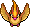
#018大比鳥Pidgeot #019小拉達Rattata
#019小拉達Rattata #020拉達Raticate
#020拉達Raticate #021烈雀Spearow
#021烈雀Spearow #022大嘴雀Fearow
#022大嘴雀Fearow #023阿柏蛇Ekans
#023阿柏蛇Ekans #024阿柏怪Arbok
#024阿柏怪Arbok #025皮卡丘Pikachu#026雷丘Raichu
#025皮卡丘Pikachu#026雷丘Raichu #027穿山鼠Sandshrew
#027穿山鼠Sandshrew #028穿山王Sandslash
#028穿山王Sandslash #029尼多蘭Nidoran♀
#029尼多蘭Nidoran♀ #030尼多娜Nidorina
#030尼多娜Nidorina #031尼多后Nidoqueen
#031尼多后Nidoqueen #032尼多朗Nidoran♂
#032尼多朗Nidoran♂ #033尼多力諾Nidorino
#033尼多力諾Nidorino #034尼多王Nidoking#035皮皮Clefairy
#034尼多王Nidoking#035皮皮Clefairy #036皮可西Clefable
#036皮可西Clefable #037六尾Vulpix
#037六尾Vulpix #038九尾Ninetales
#038九尾Ninetales #039胖丁Jigglypuff
#039胖丁Jigglypuff #040胖可丁Wigglytuff
#040胖可丁Wigglytuff #041超音蝠Zubat
#041超音蝠Zubat #042大嘴蝠Golbat
#042大嘴蝠Golbat #043走路草Oddish#044臭臭花Gloom
#043走路草Oddish#044臭臭花Gloom #045霸王花Vileplume
#045霸王花Vileplume #046派拉斯Paras
#046派拉斯Paras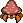
#047派拉斯特Parasect #048毛球Venonat
#048毛球Venonat #049摩魯蛾Venomoth
#049摩魯蛾Venomoth #050地鼠Diglett
#050地鼠Diglett #051三地鼠Dugtrio
#051三地鼠Dugtrio #052喵喵Meowth
#052喵喵Meowth #053貓老大Persian
#053貓老大Persian #054可達鴨Psyduck
#054可達鴨Psyduck #055哥達鴨Golduck
#055哥達鴨Golduck #056猴怪Mankey
#056猴怪Mankey #057火爆猴Primeape
#057火爆猴Primeape #058卡蒂狗Growlithe
#058卡蒂狗Growlithe #059風速狗Arcanine
#059風速狗Arcanine #060蚊香蝌蚪Poliwag#061蚊香君Poliwhirl
#060蚊香蝌蚪Poliwag#061蚊香君Poliwhirl #062蚊香泳士Poliwrath
#062蚊香泳士Poliwrath #063凱西Abra
#063凱西Abra #064勇基拉Kadabra
#064勇基拉Kadabra #065胡地Alakazam
#065胡地Alakazam #066腕力Machop
#066腕力Machop #067豪力Machoke
#067豪力Machoke #068怪力Machamp
#068怪力Machamp #069喇叭芽Bellsprout
#069喇叭芽Bellsprout #070口呆花Weepinbell
#070口呆花Weepinbell #071大食花Victreebel
#071大食花Victreebel #072瑪瑙水母Tentacool
#072瑪瑙水母Tentacool #073毒刺水母Tentacruel
#073毒刺水母Tentacruel #074小拳石Geodude
#074小拳石Geodude #075隆隆石Graveler
#075隆隆石Graveler #076隆隆岩Golem
#076隆隆岩Golem #077小火馬Ponyta
#077小火馬Ponyta #078烈焰馬Rapidash
#078烈焰馬Rapidash #079呆呆獸Slowpoke
#079呆呆獸Slowpoke #080呆殼獸Slowbro
#080呆殼獸Slowbro #081小磁怪Magnemite
#081小磁怪Magnemite #082三合一磁怪Magneton
#082三合一磁怪Magneton #083大蔥鴨Farfetch’d
#083大蔥鴨Farfetch’d #084嘟嘟Doduo
#084嘟嘟Doduo #085嘟嘟利Dodrio
#085嘟嘟利Dodrio #086小海獅Seel
#086小海獅Seel #087白海獅Dewgong
#087白海獅Dewgong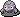
#088臭泥Grimer #089臭臭泥Muk
#089臭臭泥Muk #090大舌貝Shellder
#090大舌貝Shellder #091刺甲貝Cloyster
#091刺甲貝Cloyster #092鬼斯Gastly
#092鬼斯Gastly #093鬼斯通Haunter
#093鬼斯通Haunter #094耿鬼Gengar
#094耿鬼Gengar #095大岩蛇Onix
#095大岩蛇Onix #096催眠貘Drowzee
#096催眠貘Drowzee #097引夢貘人Hypno
#097引夢貘人Hypno #098大鉗蟹Krabby
#098大鉗蟹Krabby #099巨鉗蟹Kingler
#099巨鉗蟹Kingler #100霹靂電球Voltorb
#100霹靂電球Voltorb #101頑皮雷彈Electrode
#101頑皮雷彈Electrode #102蛋蛋Exeggcute
#102蛋蛋Exeggcute #103椰蛋樹Exeggutor
#103椰蛋樹Exeggutor #104卡拉卡拉Cubone
#104卡拉卡拉Cubone #105嘎啦嘎啦Marowak
#105嘎啦嘎啦Marowak #106飛腿郎Hitmonlee
#106飛腿郎Hitmonlee #107快拳郎Hitmonchan
#107快拳郎Hitmonchan #108大舌頭Lickitung
#108大舌頭Lickitung #109瓦斯彈Koffing
#109瓦斯彈Koffing #110雙彈瓦斯Weezing
#110雙彈瓦斯Weezing #111獨角犀牛Rhyhorn
#111獨角犀牛Rhyhorn #112鑽角犀獸Rhydon
#112鑽角犀獸Rhydon #113吉利蛋Chansey
#113吉利蛋Chansey #114蔓藤怪Tangela
#114蔓藤怪Tangela #115袋獸Kangaskhan
#115袋獸Kangaskhan #116墨海馬Horsea
#116墨海馬Horsea #117海刺龍Seadra
#117海刺龍Seadra #118角金魚Goldeen
#118角金魚Goldeen #119金魚王Seaking
#119金魚王Seaking #120海星星Staryu
#120海星星Staryu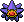
#121寶石海星Starmie#122魔牆人偶Mr. Mime #123飛天螳螂Scyther
#123飛天螳螂Scyther #124迷唇姐Jynx
#124迷唇姐Jynx #125電擊獸Electabuzz
#125電擊獸Electabuzz #126鴨嘴火獸Magmar
#126鴨嘴火獸Magmar #127凱羅斯Pinsir
#127凱羅斯Pinsir #128肯泰羅Tauros
#128肯泰羅Tauros #129鯉魚王Magikarp
#129鯉魚王Magikarp #130暴鯉龍Gyarados
#130暴鯉龍Gyarados #131拉普拉斯Lapras
#131拉普拉斯Lapras #132百變怪Ditto
#132百變怪Ditto #133伊布Eevee
#133伊布Eevee #134水伊布Vaporeon
#134水伊布Vaporeon #135雷伊布Jolteon
#135雷伊布Jolteon #136火伊布Flareon
#136火伊布Flareon #137多邊獸Porygon
#137多邊獸Porygon #138菊石獸Omanyte
#138菊石獸Omanyte #139多刺菊石獸Omastar
#139多刺菊石獸Omastar #140化石盔Kabuto
#140化石盔Kabuto #141鐮刀盔Kabutops
#141鐮刀盔Kabutops #142化石翼龍Aerodactyl
#142化石翼龍Aerodactyl #143卡比獸Snorlax
#143卡比獸Snorlax #144急凍鳥Articuno
#144急凍鳥Articuno #145閃電鳥Zapdos
#145閃電鳥Zapdos #146火焰鳥Moltres
#146火焰鳥Moltres #147迷你龍Dratini
#147迷你龍Dratini #148哈克龍Dragonair
#148哈克龍Dragonair #149快龍Dragonite
#149快龍Dragonite #150超夢Mewtwo
#150超夢Mewtwo #151夢幻Mew
#151夢幻Mew #152菊草葉Chikorita
#152菊草葉Chikorita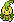
#153月桂葉Bayleef #154大竺葵Meganium
#154大竺葵Meganium #155火球鼠Cyndaquil
#155火球鼠Cyndaquil #156火岩鼠Quilava
#156火岩鼠Quilava #157火爆獸Typhlosion
#157火爆獸Typhlosion #158小鋸鱷Totodile
#158小鋸鱷Totodile #159藍鱷Croconaw
#159藍鱷Croconaw #160大力鱷Feraligatr
#160大力鱷Feraligatr #161尾立Sentret
#161尾立Sentret #162大尾立Furret
#162大尾立Furret #163咕咕Hoothoot
#163咕咕Hoothoot #164貓頭夜鷹Noctowl
#164貓頭夜鷹Noctowl #165芭瓢蟲Ledyba
#165芭瓢蟲Ledyba #166安瓢蟲Ledian
#166安瓢蟲Ledian #167圓絲蛛Spinarak
#167圓絲蛛Spinarak #168阿利多斯Ariados
#168阿利多斯Ariados #169叉字蝠Crobat
#169叉字蝠Crobat #170燈籠魚Chinchou
#170燈籠魚Chinchou #171電燈怪Lanturn
#171電燈怪Lanturn #172皮丘Pichu
#172皮丘Pichu #173皮寶寶Cleffa
#173皮寶寶Cleffa #174寶寶丁Igglybuff
#174寶寶丁Igglybuff #175波克比Togepi
#175波克比Togepi #176波克基古Togetic
#176波克基古Togetic #177天然雀Natu
#177天然雀Natu #178天然鳥Xatu
#178天然鳥Xatu #179咩利羊Mareep
#179咩利羊Mareep #180茸茸羊Flaaffy
#180茸茸羊Flaaffy #181電龍Ampharos
#181電龍Ampharos #182美麗花Bellossom
#182美麗花Bellossom #183瑪力露Marill
#183瑪力露Marill #184瑪力露麗Azumarill
#184瑪力露麗Azumarill #185樹才怪Sudowoodo
#185樹才怪Sudowoodo #186蚊香蛙皇Politoed
#186蚊香蛙皇Politoed #187毽子草Hoppip
#187毽子草Hoppip #188毽子花Skiploom
#188毽子花Skiploom #189毽子棉Jumpluff
#189毽子棉Jumpluff #190長尾怪手Aipom
#190長尾怪手Aipom #191向日種子Sunkern
#191向日種子Sunkern #192向日花怪Sunflora
#192向日花怪Sunflora #193蜻蜻蜓Yanma
#193蜻蜻蜓Yanma #194烏波Wooper
#194烏波Wooper #195沼王Quagsire
#195沼王Quagsire #196太陽伊布Espeon
#196太陽伊布Espeon #197月亮伊布Umbreon
#197月亮伊布Umbreon #198黑暗鴉Murkrow
#198黑暗鴉Murkrow #199呆呆王Slowking
#199呆呆王Slowking #200夢妖Misdreavus
#200夢妖Misdreavus #201未知圖騰Unown#202果然翁Wobbuffet#203麒麟奇Girafarig
#201未知圖騰Unown#202果然翁Wobbuffet#203麒麟奇Girafarig #204榛果球Pineco
#204榛果球Pineco #205佛烈托斯Forretress
#205佛烈托斯Forretress #206土龍弟弟Dunsparce
#206土龍弟弟Dunsparce #207天蠍Gligar
#207天蠍Gligar #208大鋼蛇Steelix
#208大鋼蛇Steelix #209布魯Snubbull#210布魯皇Granbull
#209布魯Snubbull#210布魯皇Granbull #211千針魚Qwilfish
#211千針魚Qwilfish #212巨鉗螳螂Scizor
#212巨鉗螳螂Scizor #213壺壺Shuckle
#213壺壺Shuckle #214赫拉克羅斯Heracross
#214赫拉克羅斯Heracross #215狃拉Sneasel
#215狃拉Sneasel #216熊寶寶Teddiursa
#216熊寶寶Teddiursa #217圈圈熊Ursaring
#217圈圈熊Ursaring #218熔岩蟲Slugma
#218熔岩蟲Slugma #219熔岩蝸牛Magcargo
#219熔岩蝸牛Magcargo #220小山豬Swinub
#220小山豬Swinub #221長毛豬Piloswine#222太陽珊瑚Corsola#223鐵炮魚Remoraid
#221長毛豬Piloswine#222太陽珊瑚Corsola#223鐵炮魚Remoraid #224章魚桶Octillery#225信使鳥Delibird
#224章魚桶Octillery#225信使鳥Delibird #226巨翅飛魚Mantine
#226巨翅飛魚Mantine #227盔甲鳥Skarmory
#227盔甲鳥Skarmory #228戴魯比Houndour
#228戴魯比Houndour #229黑魯加Houndoom
#229黑魯加Houndoom #230刺龍王Kingdra
#230刺龍王Kingdra #231小小象Phanpy
#231小小象Phanpy #232頓甲Donphan
#232頓甲Donphan #233多邊獸ⅡPorygon2
#233多邊獸ⅡPorygon2 #234驚角鹿Stantler
#234驚角鹿Stantler #235圖圖犬Smeargle#236無畏小子Tyrogue
#235圖圖犬Smeargle#236無畏小子Tyrogue #237戰舞郎Hitmontop#238迷唇娃Smoochum
#237戰舞郎Hitmontop#238迷唇娃Smoochum #239電擊怪Elekid
#239電擊怪Elekid #240鴨嘴寶寶Magby
#240鴨嘴寶寶Magby #241大奶罐Miltank
#241大奶罐Miltank #242幸福蛋Blissey
#242幸福蛋Blissey #243雷公Raikou
#243雷公Raikou #244炎帝Entei
#244炎帝Entei #245水君Suicune
#245水君Suicune #246幼基拉斯Larvitar
#246幼基拉斯Larvitar #247沙基拉斯Pupitar
#247沙基拉斯Pupitar #248班基拉斯Tyranitar
#248班基拉斯Tyranitar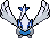
#249洛奇亞Lugia #250鳳王Ho-Oh
#250鳳王Ho-Oh #251時拉比Celebi
#251時拉比Celebi #252木守宮Treecko
#252木守宮Treecko #253森林蜥蜴Grovyle
#253森林蜥蜴Grovyle #254蜥蜴王Sceptile
#254蜥蜴王Sceptile #255火稚雞Torchic
#255火稚雞Torchic #256力壯雞Combusken
#256力壯雞Combusken #257火焰雞Blaziken
#257火焰雞Blaziken #258水躍魚Mudkip
#258水躍魚Mudkip #259沼躍魚Marshtomp
#259沼躍魚Marshtomp #260巨沼怪Swampert
#260巨沼怪Swampert #261土狼犬Poochyena
#261土狼犬Poochyena #262大狼犬Mightyena
#262大狼犬Mightyena #263蛇紋熊Zigzagoon
#263蛇紋熊Zigzagoon #264直衝熊Linoone
#264直衝熊Linoone #265刺尾蟲Wurmple
#265刺尾蟲Wurmple #266甲殼繭Silcoon
#266甲殼繭Silcoon #267狩獵鳳蝶Beautifly
#267狩獵鳳蝶Beautifly #268盾甲繭Cascoon
#268盾甲繭Cascoon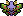
#269毒粉蛾Dustox #270蓮葉童子Lotad
#270蓮葉童子Lotad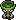
#271蓮帽小童Lombre #272樂天河童Ludicolo
#272樂天河童Ludicolo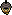
#273橡實果Seedot #274長鼻葉Nuzleaf
#274長鼻葉Nuzleaf #275狡猾天狗Shiftry
#275狡猾天狗Shiftry #276傲骨燕Taillow
#276傲骨燕Taillow #277大王燕Swellow
#277大王燕Swellow #278長翅鷗Wingull
#278長翅鷗Wingull #279大嘴鷗Pelipper
#279大嘴鷗Pelipper #280拉魯拉絲Ralts
#280拉魯拉絲Ralts #281奇魯莉安Kirlia
#281奇魯莉安Kirlia #282沙奈朵Gardevoir
#282沙奈朵Gardevoir #283溜溜糖球Surskit
#283溜溜糖球Surskit #284雨翅蛾Masquerain
#284雨翅蛾Masquerain #285蘑蘑菇Shroomish
#285蘑蘑菇Shroomish #286斗笠菇Breloom
#286斗笠菇Breloom #287懶人獺Slakoth
#287懶人獺Slakoth #288過動猿Vigoroth
#288過動猿Vigoroth #289請假王Slaking#290土居忍士Nincada#291鐵面忍者Ninjask
#289請假王Slaking#290土居忍士Nincada#291鐵面忍者Ninjask #292脫殼忍者Shedinja
#292脫殼忍者Shedinja #293咕妞妞Whismur#294吼爆彈Loudred
#293咕妞妞Whismur#294吼爆彈Loudred #295爆音怪Exploud
#295爆音怪Exploud #296幕下力士Makuhita
#296幕下力士Makuhita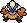
#297鐵掌力士Hariyama #298露力麗Azurill
#298露力麗Azurill #299朝北鼻Nosepass#300向尾喵Skitty
#299朝北鼻Nosepass#300向尾喵Skitty #301優雅貓Delcatty
#301優雅貓Delcatty #302勾魂眼Sableye
#302勾魂眼Sableye #303大嘴娃Mawile#304可可多拉Aron
#303大嘴娃Mawile#304可可多拉Aron #305可多拉Lairon
#305可多拉Lairon #306波士可多拉Aggron
#306波士可多拉Aggron #307瑪沙那Meditite
#307瑪沙那Meditite #308恰雷姆Medicham
#308恰雷姆Medicham #309落雷獸Electrike#310雷電獸Manectric
#309落雷獸Electrike#310雷電獸Manectric #311正電拍拍Plusle
#311正電拍拍Plusle #312負電拍拍Minun
#312負電拍拍Minun #313電螢蟲Volbeat
#313電螢蟲Volbeat #314甜甜螢Illumise
#314甜甜螢Illumise #315毒薔薇Roselia
#315毒薔薇Roselia #316溶食獸Gulpin#317吞食獸Swalot
#316溶食獸Gulpin#317吞食獸Swalot #318利牙魚Carvanha
#318利牙魚Carvanha #319巨牙鯊Sharpedo
#319巨牙鯊Sharpedo #320吼吼鯨Wailmer#321吼鯨王Wailord
#320吼吼鯨Wailmer#321吼鯨王Wailord #322呆火駝Numel
#322呆火駝Numel #323噴火駝Camerupt
#323噴火駝Camerupt #324煤炭龜Torkoal
#324煤炭龜Torkoal #325跳跳豬Spoink
#325跳跳豬Spoink #326噗噗豬Grumpig
#326噗噗豬Grumpig #327晃晃斑Spinda
#327晃晃斑Spinda #328大顎蟻Trapinch
#328大顎蟻Trapinch #329超音波幼蟲Vibrava
#329超音波幼蟲Vibrava #330沙漠蜻蜓Flygon
#330沙漠蜻蜓Flygon #331刺球仙人掌Cacnea
#331刺球仙人掌Cacnea #332夢歌仙人掌Cacturne
#332夢歌仙人掌Cacturne #333青綿鳥Swablu
#333青綿鳥Swablu #334七夕青鳥Altaria#335貓鼬斬Zangoose
#334七夕青鳥Altaria#335貓鼬斬Zangoose #336飯匙蛇Seviper
#336飯匙蛇Seviper #337月石Lunatone
#337月石Lunatone #338太陽岩Solrock
#338太陽岩Solrock #339泥泥鰍Barboach
#339泥泥鰍Barboach #340鯰魚王Whiscash
#340鯰魚王Whiscash #341龍蝦小兵Corphish
#341龍蝦小兵Corphish #342鐵螯龍蝦Crawdaunt
#342鐵螯龍蝦Crawdaunt #343天秤偶Baltoy
#343天秤偶Baltoy #344念力土偶Claydol
#344念力土偶Claydol #345觸手百合Lileep
#345觸手百合Lileep #346搖籃百合Cradily
#346搖籃百合Cradily #347太古羽蟲Anorith
#347太古羽蟲Anorith #348太古盔甲Armaldo
#348太古盔甲Armaldo #349醜醜魚Feebas
#349醜醜魚Feebas #350美納斯Milotic
#350美納斯Milotic #351飄浮泡泡Castform
#351飄浮泡泡Castform #352變隱龍Kecleon
#352變隱龍Kecleon #353怨影娃娃Shuppet
#353怨影娃娃Shuppet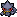
#354詛咒娃娃Banette#355夜巡靈Duskull #356彷徨夜靈Dusclops
#356彷徨夜靈Dusclops #357熱帶龍Tropius
#357熱帶龍Tropius #358風鈴鈴Chimecho
#358風鈴鈴Chimecho #359阿勃梭魯Absol
#359阿勃梭魯Absol #360小果然Wynaut
#360小果然Wynaut #361雪童子Snorunt
#361雪童子Snorunt #362冰鬼護Glalie
#362冰鬼護Glalie #363海豹球Spheal
#363海豹球Spheal #364海魔獅Sealeo
#364海魔獅Sealeo #365帝牙海獅Walrein
#365帝牙海獅Walrein #366珍珠貝Clamperl
#366珍珠貝Clamperl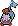
#367獵斑魚Huntail #368櫻花魚Gorebyss
#368櫻花魚Gorebyss #369古空棘魚Relicanth
#369古空棘魚Relicanth #370愛心魚Luvdisc
#370愛心魚Luvdisc #371寶貝龍Bagon
#371寶貝龍Bagon #372甲殼龍Shelgon
#372甲殼龍Shelgon #373暴飛龍Salamence#374鐵啞鈴Beldum
#373暴飛龍Salamence#374鐵啞鈴Beldum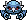
#375金屬怪Metang #376巨金怪Metagross
#376巨金怪Metagross #387草苗龜Turtwig
#387草苗龜Turtwig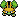
#388樹林龜Grotle #389土台龜Torterra
#389土台龜Torterra #390小火焰猴Chimchar
#390小火焰猴Chimchar #391猛火猴Monferno
#391猛火猴Monferno #392烈焰猴Infernape
#392烈焰猴Infernape #393波加曼Piplup
#393波加曼Piplup #394波皇子Prinplup
#394波皇子Prinplup #395帝王拿波Empoleon
#395帝王拿波Empoleon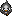
#396姆克兒Starly #397姆克鳥Staravia
#397姆克鳥Staravia #398姆克鷹Staraptor
#398姆克鷹Staraptor #399大牙狸Bidoof
#399大牙狸Bidoof #400大尾狸Bibarel
#400大尾狸Bibarel #401圓法師Kricketot
#401圓法師Kricketot #402音箱蟀Kricketune
#402音箱蟀Kricketune #403小貓怪Shinx#404勒克貓Luxio
#403小貓怪Shinx#404勒克貓Luxio #405倫琴貓Luxray
#405倫琴貓Luxray #406含羞苞Budew
#406含羞苞Budew #407羅絲雷朵Roserade
#407羅絲雷朵Roserade #408頭蓋龍Cranidos
#408頭蓋龍Cranidos #409戰槌龍Rampardos
#409戰槌龍Rampardos #410盾甲龍Shieldon
#410盾甲龍Shieldon #411護城龍Bastiodon
#411護城龍Bastiodon #412結草兒Burmy
#412結草兒Burmy #413結草貴婦Wormadam
#413結草貴婦Wormadam #414紳士蛾Mothim#415三蜜蜂Combee
#414紳士蛾Mothim#415三蜜蜂Combee #416蜂女王Vespiquen
#416蜂女王Vespiquen #417帕奇利茲Pachirisu
#417帕奇利茲Pachirisu #418泳圈鼬Buizel
#418泳圈鼬Buizel #419浮潛鼬Floatzel
#419浮潛鼬Floatzel #420櫻花寶Cherubi
#420櫻花寶Cherubi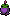
#421櫻花兒Cherrim #422無殼海兔Shellos
#422無殼海兔Shellos #423海兔獸Gastrodon
#423海兔獸Gastrodon #424雙尾怪手Ambipom
#424雙尾怪手Ambipom #425飄飄球Drifloon
#425飄飄球Drifloon #426隨風球Drifblim
#426隨風球Drifblim #427捲捲耳Buneary
#427捲捲耳Buneary #428長耳兔Lopunny
#428長耳兔Lopunny #429夢妖魔Mismagius
#429夢妖魔Mismagius #430烏鴉頭頭Honchkrow
#430烏鴉頭頭Honchkrow #431魅力喵Glameow
#431魅力喵Glameow #432東施喵Purugly
#432東施喵Purugly #433鈴鐺響Chingling
#433鈴鐺響Chingling #434臭鼬噗Stunky
#434臭鼬噗Stunky #435坦克臭鼬Skuntank
#435坦克臭鼬Skuntank #436銅鏡怪Bronzor
#436銅鏡怪Bronzor #437青銅鐘Bronzong
#437青銅鐘Bronzong #438盆才怪Bonsly
#438盆才怪Bonsly #439魔尼尼Mime Jr.
#439魔尼尼Mime Jr. #440小福蛋Happiny
#440小福蛋Happiny #441聒噪鳥Chatot
#441聒噪鳥Chatot #442花岩怪Spiritomb
#442花岩怪Spiritomb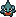
#443圓陸鯊Gible #444尖牙陸鯊Gabite
#444尖牙陸鯊Gabite #445烈咬陸鯊Garchomp
#445烈咬陸鯊Garchomp #446小卡比獸Munchlax
#446小卡比獸Munchlax #447利歐路Riolu
#447利歐路Riolu #448路卡利歐Lucario
#448路卡利歐Lucario #449沙河馬Hippopotas
#449沙河馬Hippopotas #450河馬獸Hippowdon
#450河馬獸Hippowdon #451鉗尾蠍Skorupi
#451鉗尾蠍Skorupi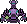
#452龍王蠍Drapion #453不良蛙Croagunk
#453不良蛙Croagunk #454毒骷蛙Toxicroak
#454毒骷蛙Toxicroak #455尖牙籠Carnivine
#455尖牙籠Carnivine #456螢光魚Finneon
#456螢光魚Finneon #457霓虹魚Lumineon#458小球飛魚Mantyke
#457霓虹魚Lumineon#458小球飛魚Mantyke #459雪笠怪Snover
#459雪笠怪Snover #460暴雪王Abomasnow
#460暴雪王Abomasnow #461瑪狃拉Weavile
#461瑪狃拉Weavile #462自爆磁怪Magnezone
#462自爆磁怪Magnezone #463大舌舔Lickilicky
#463大舌舔Lickilicky #464超甲狂犀Rhyperior
#464超甲狂犀Rhyperior #465巨蔓藤Tangrowth
#465巨蔓藤Tangrowth #466電擊魔獸Electivire
#466電擊魔獸Electivire #467鴨嘴炎獸Magmortar
#467鴨嘴炎獸Magmortar #468波克基斯Togekiss
#468波克基斯Togekiss #469遠古巨蜓Yanmega
#469遠古巨蜓Yanmega #470葉伊布Leafeon
#470葉伊布Leafeon #471冰伊布Glaceon
#471冰伊布Glaceon #472天蠍王Gliscor
#472天蠍王Gliscor #473象牙豬Mamoswine
#473象牙豬Mamoswine #474多邊獸ＺPorygon-Z
#474多邊獸ＺPorygon-Z #475艾路雷朵Gallade
#475艾路雷朵Gallade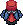
#476大朝北鼻Probopass #477黑夜魔靈Dusknoir
#477黑夜魔靈Dusknoir #478雪妖女Froslass
#478雪妖女Froslass #479洛托姆Rotom
#479洛托姆Rotom尚未登場（24）
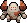
#377雷吉洛克Regirock#378雷吉艾斯Regice#379雷吉斯奇魯Registeel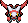
#380拉帝亞斯Latias#381拉帝歐斯Latios #382蓋歐卡Kyogre
#382蓋歐卡Kyogre #383固拉多Groudon
#383固拉多Groudon #384烈空坐Rayquaza#385基拉祈Jirachi
#384烈空坐Rayquaza#385基拉祈Jirachi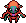
#386代歐奇希斯Deoxys#480由克希Uxie#481艾姆利多Mesprit#482亞克諾姆Azelf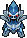
#483帝牙盧卡Dialga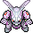
#484帕路奇亞Palkia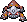
#485席多藍恩Heatran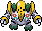
#486雷吉奇卡斯Regigigas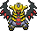
#487騎拉帝納Giratina#488克雷色利亞Cresselia#489霏歐納Phione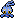
#490瑪納霏Manaphy #491達克萊伊Darkrai#492謝米Shaymin
#491達克萊伊Darkrai#492謝米Shaymin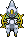
#493阿爾宙斯Arceus